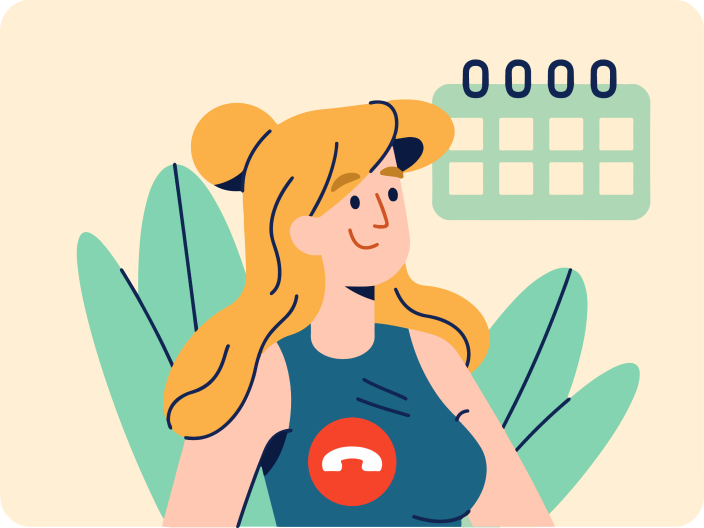

Настроим
и поможем
провести
вебинар
Полное техническое сопровождение вашей трансляции

Вебинар — основной инструмент продаж онлайн-школ.
Не стоит рисковать и проводить самому вебинар, если у вас мало опыта. Вы рискуете большим количеством времени и ресурсами, трансляция может упасть, либо пропадёт презентация и всё на смарку…
Мы же всё настроим, подготовим и сопроводим, даже если трансляция упадёт, мы восстановим её за считанные минуты.